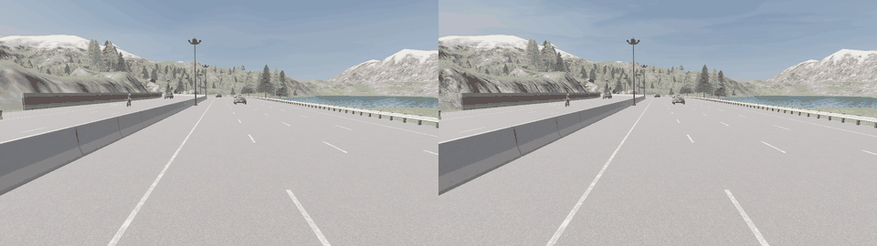
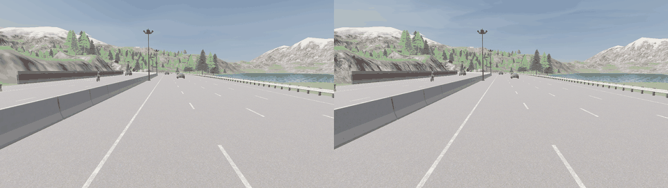
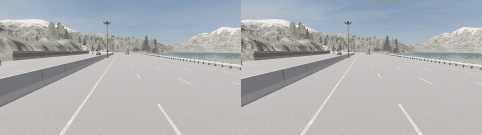
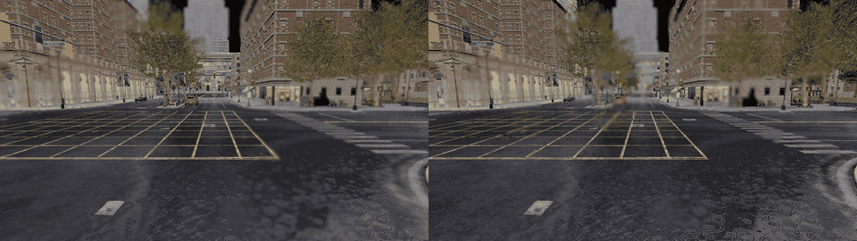

도심 환경
저속 도심 교통에서 끼어들기와 급제동 반응을 확인합니다.
- 인접 차량 cut-in옆 차선 차량이 자차 차선으로 진입
- 전방 차량 급제동앞차의 갑작스러운 감속에 대한 반응
- 정체 차량 노출앞차가 빠지며 느린 차량이 드러나는 상황
VLM prior를 CARLA control candidate로 변환해 같은 사건에서 두 조건을 비교합니다.
실험 구성
도심, 자동차 전용도로, 고속도로, 인식 품질 스트레스 환경으로 나누고 각 환경에서 3개 case를 비교했습니다.
저속 도심 교통에서 끼어들기와 급제동 반응을 확인합니다.
중고속 주행에서 합류, 속도 차이, 기본 추종을 비교합니다.
고속 조건에서 cut-in과 뒤차 충격파 가능성을 확인합니다.
가시성 저하와 인식 노이즈에서 반응이 안정적인지 봅니다.
Core visual evidence
진입로 합류와 속도-간격 압박은 정량 비교의 핵심 사례입니다. 아래 영상은 새로 생성한 24초 대표 비교 영상입니다.

진입로 합류 조건에서 No-GUIDANCE는 합류 이후 늦게 반응하며 짧은 TTC와 높은 collision trial rate를 보입니다. GUIDANCE는 선제적으로 gap을 만들며 TTC margin을 확보합니다.

속도-간격 압박 조건에서 No-GUIDANCE는 속도 차이로 closing risk가 커집니다. GUIDANCE는 gap을 먼저 확보해 TTC < 5s와 collision trial을 줄이는 방향을 보입니다.
상황별 사례 영상
각 GIF는 같은 사건을 No-GUIDANCE와 GUIDANCE 조건으로 side-by-side 비교합니다. 왼쪽은 No-GUIDANCE, 오른쪽은 GUIDANCE 조건입니다.
01 Urban downtown
저속 도심 교통에서 cut-in, 급제동, stop-and-go reveal을 확인합니다.

전방/인접 차량이 ego lane으로 진입하는 도심 cut-in 상황입니다.

전방 차량이 갑자기 감속할 때 ego 반응과 following string 변화를 관찰합니다.

앞차가 빠지며 저속/정체 차량이 드러나는 상황을 비교합니다.
02 Arterial motorway
중고속 조건에서 기본 following, 진입로 합류, 속도-간격 압박을 확인합니다.
정상 following 상황에서 불필요한 강개입 없이 안정적인 차간 반응을 보는 보조 case입니다.
합류 차량이 ego lane에 들어오는 상황에서 선제적 gap formation이 나타나는지 확인합니다.
속도 차이와 짧은 gap으로 closing risk가 커지는 stress 조건입니다.
03 Highway
고속 moving lead, cut-in, dense traffic string에서 shockwave 가능성을 봅니다.
고속 조건의 기본 following 안정성을 확인합니다.
고속 cut-in에서 더 큰 안전거리와 완만한 감속 반응이 필요한 case입니다.

following vehicle string으로 위험과 감속 충격이 전파되는지 확인합니다.
04 Visibility and perception
가시성 저하와 perception noise에서 보수적 trajectory-prior가 어떻게 반응하는지 확인합니다.

안개 환경에서 graph/perception confidence가 낮아질 때의 반응을 봅니다.

비 환경에서 perception degradation과 gap response를 함께 확인합니다.

bbox/depth/edge-gap noise 또는 fallback stress가 있는 cut-in case입니다.
Full case-level metrics
각 행은 같은 case에서 No-GUIDANCE와 GUIDANCE를 paired 조건으로 비교한 ego 기준 요약입니다. Min TTC는 높을수록 좋고, TTC ratio, collision rate, 급가속/급감속, jerk는 낮을수록 좋습니다.
| 환경 | Case | Min TTC | TTC < 5s | TTC < 1.5s | Collision | 급가속 | 급감속 | Jerk | 판정 |
|---|---|---|---|---|---|---|---|---|---|
| 도심 | 인접 차량 cut-in150 trials | 0.92s→5.05s | 0.635→0.045 | 0.129→0.010 | 1.000→0.013 | 171.4→51.8 | 38.1→32.2 | 23.59→9.63 | 전반 개선 |
| 도심 | 전방 차량 급제동150 trials | 1.40s→2.16s | 0.373→0.280 | 0.026→0.033 | 0.160→0.167 | 68.0→96.1 | 25.3→63.9 | 12.88→13.75 | 혼합 |
| 도심 | 정체 차량 노출150 trials | 0.62s→0.99s | 0.301→0.361 | 0.069→0.074 | 1.000→0.993 | 101.7→145.8 | 11.4→41.1 | 32.47→23.02 | 혼합 |
| 자동차 전용도로 | 기본 following150 trials | 6.08s→6.08s | 0.268→0.268 | 0.151→0.151 | 0.253→0.247 | 91.5→92.0 | 1.0→1.8 | 2.20→2.32 | 중립 |
| 자동차 전용도로 | 진입로 합류150 trials | 1.31s→7.05s | 0.454→0.029 | 0.045→0.001 | 0.560→0.013 | 212.7→77.0 | 66.8→2.1 | 4.53→2.59 | 전반 개선 |
| 자동차 전용도로 | 속도-간격 압박150 trials | 0.96s→15.33s | 0.482→0.000 | 0.093→0.000 | 0.853→0.000 | 227.1→114.5 | 50.6→36.4 | 10.56→5.20 | 전반 개선 |
| 고속도로 | 고속 following150 trials | 3.36s→3.36s | 0.763→0.766 | 0.530→0.531 | 0.727→0.727 | 140.0→144.2 | 7.9→6.6 | 3.54→3.59 | 혼합 |
| 고속도로 | 고속 cut-in150 trials | 1.35s→2.05s | 0.190→0.287 | 0.154→0.214 | 0.433→0.440 | 132.9→132.1 | 12.5→3.7 | 3.30→3.31 | 혼합 |
| 고속도로 | 밀집 차량열150 trials | 1.25s→1.94s | 0.143→0.226 | 0.111→0.169 | 0.427→0.460 | 140.3→133.3 | 22.5→4.4 | 3.77→3.41 | 혼합 |
| 인식 품질 스트레스 | 안개 환경 cut-in150 trials | 0.90s→4.95s | 0.623→0.043 | 0.124→0.010 | 1.000→0.013 | 157.5→82.3 | 34.0→33.4 | 20.00→13.93 | 전반 개선 |
| 인식 품질 스트레스 | 비 환경 cut-in150 trials | 0.90s→4.87s | 0.623→0.042 | 0.124→0.011 | 1.000→0.007 | 157.5→80.3 | 34.0→33.8 | 19.98→13.87 | 전반 개선 |
| 인식 품질 스트레스 | 인식 노이즈 cut-in150 trials | 0.92s→5.33s | 0.637→0.036 | 0.129→0.010 | 1.000→0.020 | 161.1→89.0 | 34.8→31.8 | 19.90→13.69 | 전반 개선 |
표는 `traffic_env_unified_gif_20260521`의 ego vehicle-order group 평균에서 정리했습니다. “전반 개선”은 TTC margin 증가와 collision 또는 harsh-driving proxy 감소가 함께 나타난 case이며, “혼합/중립”은 일부 안전 또는 comfort proxy가 개선되지 않아 추가 튜닝 대상으로 남긴 case입니다.
Full-case visualization
12개 case 표를 시각적으로 요약했습니다. 전반 개선 case와 혼합 case를 분리해 해석하고, 실제 claim은 controlled CARLA simulation diagnostic 범위로 제한합니다.
표의 ego 기준 값을 case 단위로 집계했습니다. GUIDANCE가 항상 우세하다고 단정하지 않고, 개선이 뚜렷한 case와 추가 튜닝이 필요한 case를 분리합니다.
막대는 GUIDANCE - No-GUIDANCE의 Min TTC 변화입니다. 값이 클수록 안전 여유가 커진 것입니다.
아래 값은 No-GUIDANCE - GUIDANCE입니다. 초록색은 감소, 붉은색은 GUIDANCE 조건에서 증가한 혼합 case입니다.
급가속, 급감속, jerk는 낮을수록 부드러운 주행 proxy입니다. 아래는 12개 case 중 GUIDANCE 조건에서 값이 낮아진 case 수입니다.
Claim boundary
본 결과는 controlled CARLA simulation diagnostic입니다. GUIDANCE가 진입로 합류와 속도-간격 압박 조건에서 No-GUIDANCE보다 더 큰 TTC margin, 더 낮은 collision trial rate, 더 낮은 harsh-driving proxy를 보였다는 시뮬레이션 기반 근거를 제공합니다.
다만 실제 차량 제어 성능 인증이나 모든 주행 상황에 대한 일반화 검증은 아니며, 추가 scenario family와 real-world validation이 필요합니다.